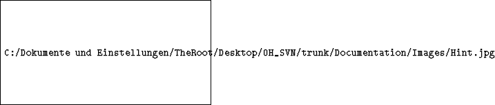

Chapter 1
Perl
The purpose of the Perl option is to provide a scripting language for beginners that is
possibly easier to get productive with, if you either already familiar with Perl, or have a
strong disposition for not using OH-Script.
1.1. Advantages of Perl
- Suitability for rapid prototyping
- Wide-spread usage
- Many libraries available and an active community at http://cpan.org
- Really good interfacing, e.g. to C.
- Syntax similar to C and some other script languages (bash, awk, tcl)
1.2. Disadvantages of Perl
- Performance: Perl compiles to intermediate code (similar to bytecode),
which gets executed by the interpreter. This is slower than compiled binary
code, however some built-in functions (e.g. string- and list-operations) are
said to be faster than C.
- Clarity. Perl is a language, which bought good ideas from nearly
everywhere. You can write clear and understandable programs, if you
want; but most Perl "gurus" are famous for the opposite. It is quite easy
to write non-maintainable obfuscated Perl code.
1.3. Installation and configuration of Perl
- Download ActivePerl from
http://www.activestate.com/Products/activeperl and install.
- Perl needs the package "Win32::API" to interact with the callback DLL.
Download this package using Perl’s package manager. Type at the command
line (case sensitive; you should have administrator privileges to do this):
- OpenHoldem must be able to find "PerlEz.dll" which contains our embedded
interpreter. You must change the DLL search path from the DOS prompt:
set PATH = C:\Programs\Perl\Bin;%PATH%
- You need Visual C++ 2005 redist. package from Microsoft (SP1), especially
msvcrt.dll, otherwise Perl can’t load correctly (you will get a message:
"PerlEz.dll not found or not accessible").
1.4. Perl usage
All symbols beginning with "pl_" (e.g. "pl_call") in your formula will be treated as
Perl symbols and requested from OpenHoldem’s built-in Perl interpreter. The
same for gws-calls inside the dll. All symbols are expected to be either double
constants, double variables or functions without parameters returning a double
value.
Perl for OpenHoldem has a built-in function "gws" (get_WinHoldem_Symbol),
allowing you to request OpenHoldem symbols or DLL symbols in your Perl formulas.
(Therefore you have full interoperability of OH script, DLL and Perl. You can further use
all your existing code). This function
"gws" resides in a package called "Perl_OH_Interaction.pm", which you have to include
in your bot: use Perl_OH_Interaction;
The table name can be accessed using the function gwt(). To get a player name for a
given chair use gwp(N), where N is the chair number. Load a Perl file via the menu or
using the preferences.
1.5. Perl recommended Resources
- http://en.wikipedia.org/wiki/Perl
- Wainwright: Professional Perl Programing
- Schwartz: Learning Perl, Intermediate Perl, Mastering
- Perl Conway: Perl hacks, tips and tools for programing, debugging and
surviving
- Till: Teach yourself Perl in 21 days
1.6. Perl editors
You may need an editor with syntax-highlighting for Perl.
1.7. Perl demo bot
You will find an extremely simple demo bot at http://www.maxinmontreal.com/forums/viewtopic.php?p=20129.
It contains including:
- A classic formula, redirecting some symbols to Perl functions
- A nearly empty Perl bot, giving you a start
- The module Perl_OH_Interaction.pm, providing the "gws" function
To use it, you have to adapt the following lines according to your system settings:
use lib "C:\..."
use constant the_DebugFile => "..."